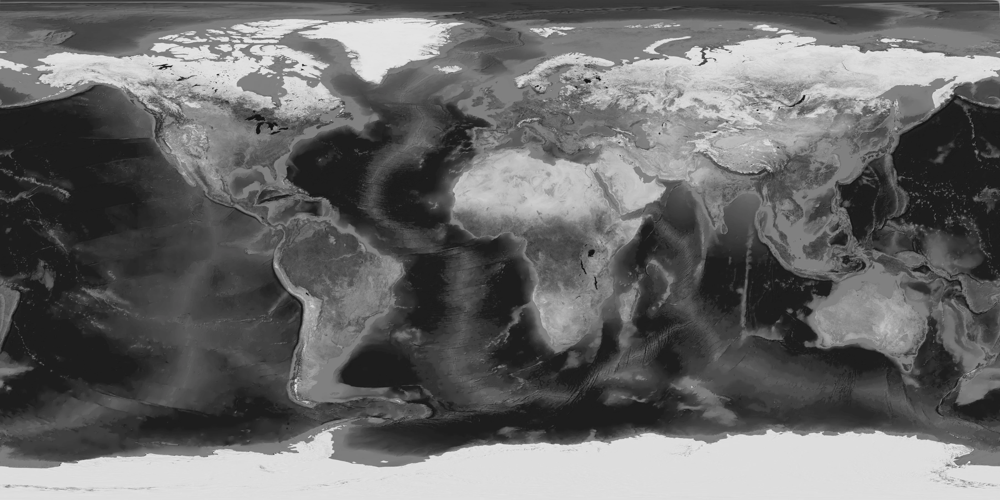

Earth from the Moon

Moon from the Earth
Select any position for its coordinates and target altitude. Use arrow keys to move by one degree, Shift and arrows for ten degrees. Escape clears the readout.

Select any position for its coordinates and target altitude. Use arrow keys to move by one degree, Shift and arrows for ten degrees. Escape clears the readout.